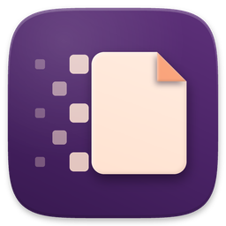

Hushpad for Windows
버전 1.0.0 · 공개 준비 중 · 64비트
곧 공개됩니다
지금은 정식 버전을 준비하고 있어요. 공개되면 이 페이지에서 바로 받을 수 있고, 주소는 그대로입니다.
설치
- zip 파일을 받아 원하는 곳(예:
C:\Program Files\Hushpad또는 문서 폴더)에 풉니다. Hushpad.exe를 실행합니다. 설치 과정은 없어요.- 처음 실행하면 메모를 보관할 폴더와 암호를 정합니다. 여러 PC에서 쓰려면 Dropbox·OneDrive 안의 폴더를 고르세요.
“Windows의 PC 보호” 창이 뜨면
새로 나온 프로그램이라 Windows SmartScreen이 경고할 수 있어요. 받은 파일이 아래 SHA-256 값과 같은지 확인한 뒤 “추가 정보 › 실행”을 누르세요.
파일 확인 (SHA-256)
PowerShell에서 Get-FileHash .\파일이름.zip 으로 나온 값과 비교하세요.
공개될 때 표시됩니다
필요한 환경
Windows 10(2004 이상) 또는 Windows 11, 64비트. 캡처에서 창 숨기기는 Windows 10 2004 이상에서 동작해요. 인터넷 연결은 필요 없습니다.
지울 때
프로그램 폴더를 지우면 됩니다. 메모는 보관 폴더에 그대로 남아 있어요(암호화된 상태). 메모까지 지우려면 보관 폴더도 함께 지우세요.